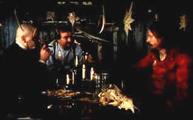

| Zero Kelvin/A-,C |
| Kino/1997/113/WS 1.66 |
Powerful psychological drama that swirls like wind blown snow. Set on a hunting expedition for The Greenland Company, this is not a man against nature film, but more a film about man's nature.
Stellen Skarsgård is amazing as Randbæk. Masked beneath an unkempt beard the twisted soul of this Greenland hunter is portrayed with frightening ferocity.
 |
| Celebrating Christmas. ©Kino |

Selections from the Feature
Archive include articles on
Akira Kurosawa, Blonde
Bimbos,
Frank
Darabont, Steven
Culp, John
Herzfeld or Vietnam:
The Hollywood Pariah, and many more....
Hitchcock
on DVD

Information and review links to Alfred Hitchcock on DVD


Glenn Erickson's insightful DVD reviews have been a Internet fixture for
several years. Check out some of his sophisticated feature articles.
Currently hosted by DVD Talk.

News, information, features about current
films in theaters and in the pipeline. Easy to use interface.

DiscReviews.com
is a new
DVD review site with a slick interface.

Lady
Eve, The (SE) A,C+

Wonderful classic comedy from writer/director Preston Sturges. Henry
Fonda and Barbara Stanwyck star.